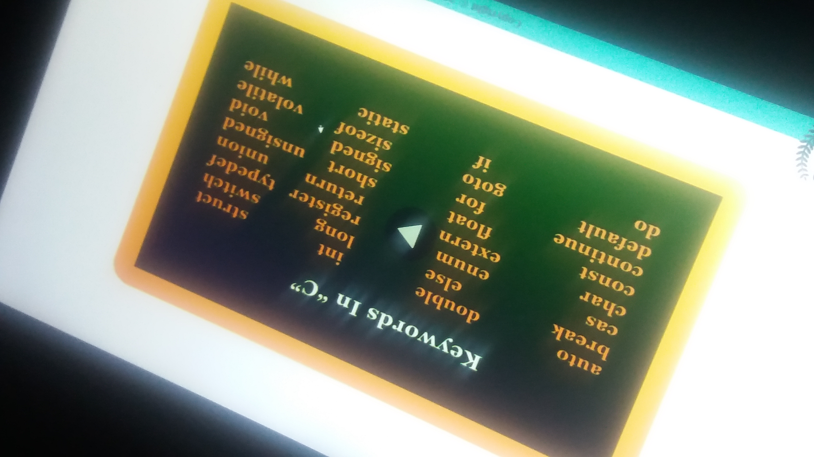
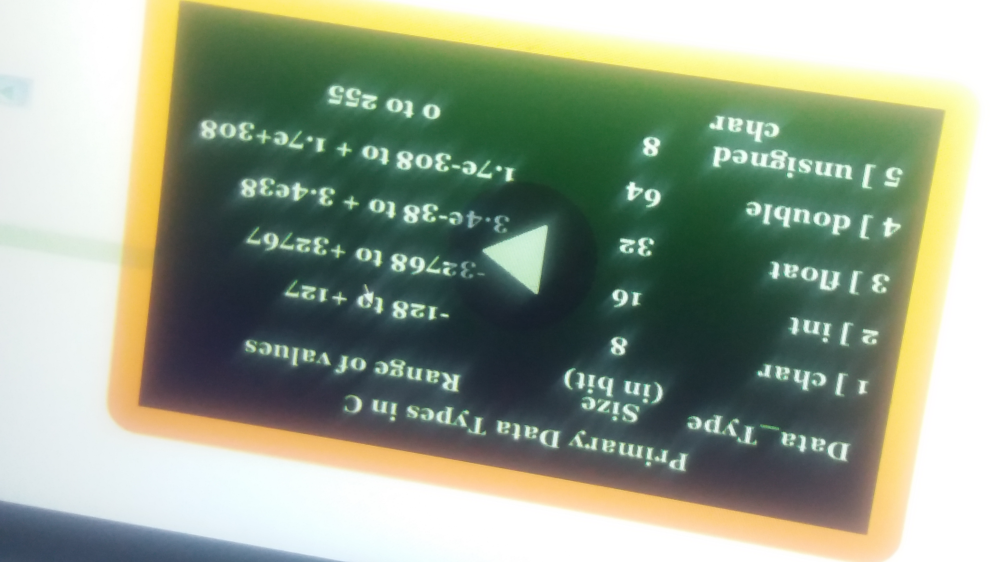
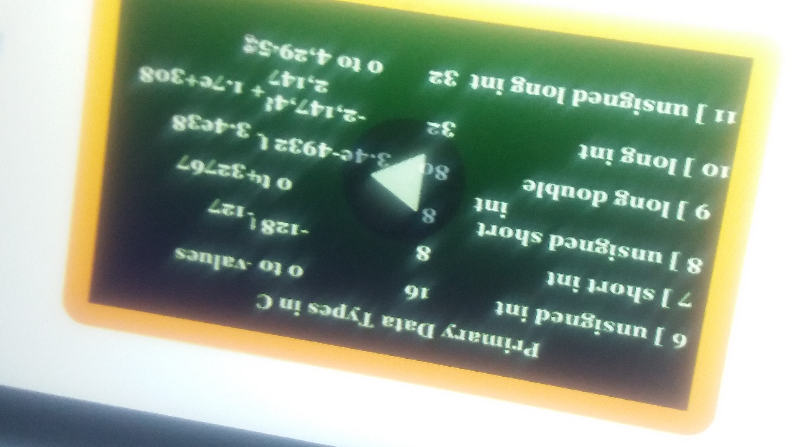
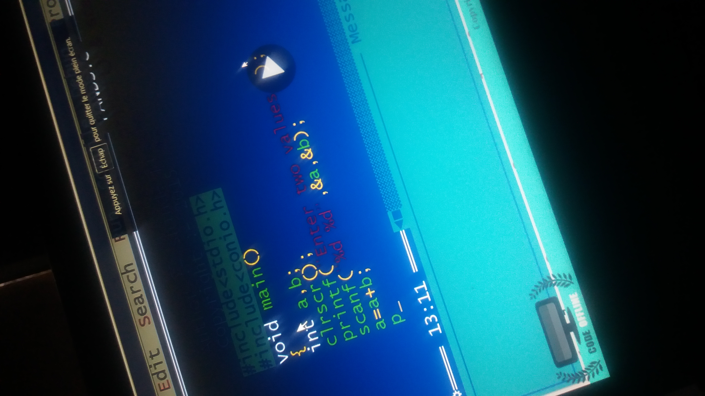
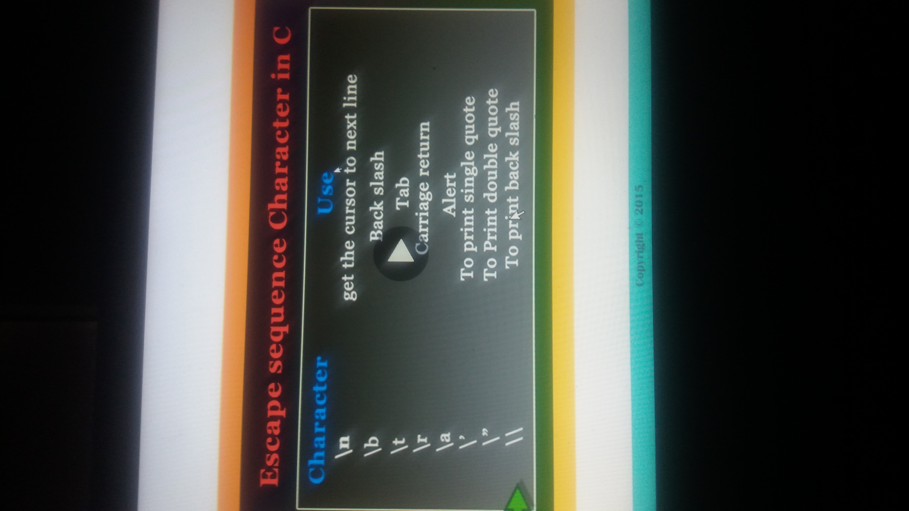
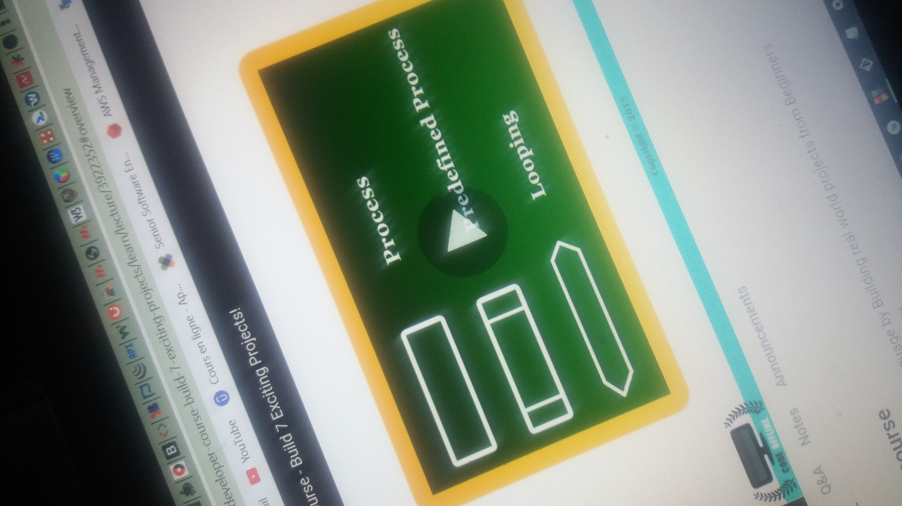

la structure de base d'un programme en C par rapport à JAVA public class Main{ ... public static void main( String[] argvs) { } } est #include

les types de donnees utilisées en mémoire C sont int char float pareil chez java on peut determiner l'ensemble des valeurs d'un type de données en C par la formule -power(2, n)-1 < x < power(2,n)
l'equivalent de System.out.println( ... ) / console.log( ... ) en C est printf( ..., ... ) l'equivalent de Scanner.System en C est scanf( ... , ... )
on peut representer le processus d'un programme à travers un flowchart
il est très important d'utiliser les operateurs tels que expressions ? value : value
l'equivalent du switch ( ... ) { ... } de JAVA et javascript existe egalement en
il faut savoir que l'equivalent de false de JAVA est 0 en C et l'equivalent de true de JAVA est 1 en C
l'equivalent de break, continue et goto de JAVA existent egalement en C
goto printme ; printme:printf("Welcome to codeoffline.com");
l'equivalent de int[] x de java en C est int x[3] = { ... }
une case de la mémoire reprensete bel et bien 1 octet soit 2 cases memoires pour une variable de type int
l'equivalent de l'initialisation d'un tableau = new int[3] en C est int x[3] = { ... }
il est strictement recommandé d'ecrire directement dans l'adresse de la variable en mémoire
le format %s permet d'ecrire toute une chaine de caractere dans toute un ensemble de case de memoire alors que le format %c permet d'ecrire un caractère dans une seule case mémoire
void *a est un pointeur qi pointe vers n'importe quel type de données
les donnees de typê personnalisé, il y'a une case qui separe deux varariables en memoire
l'equivalement de declarer un tableau d'objet de JAVA new nomClasse[ 4 ] en C est struct nomStructure { ... } s[2]





